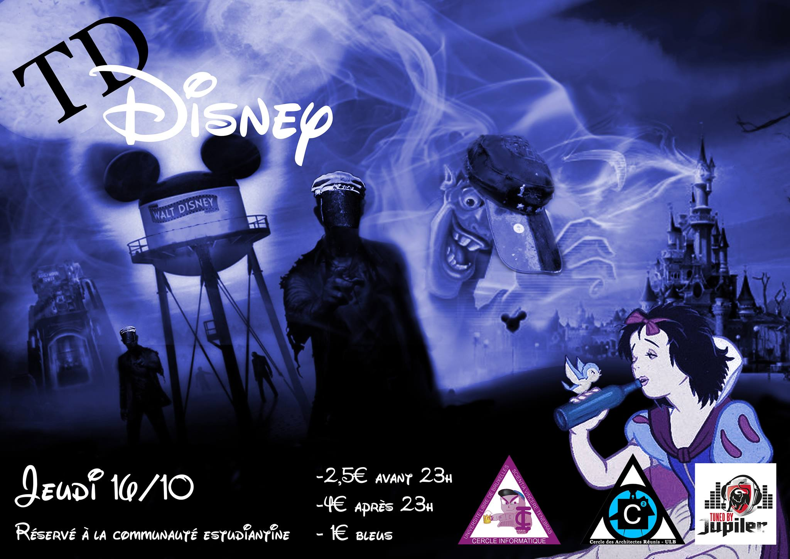

En vrac
Tu es en BA1 ?
Tu étais là au speech de rentrée et tu veux plus d'infos ? Justement tu n'y étais pas et tu veux te mettre à jour ?
Le CI a comme but d'aider les étudiants en informatique et pour ça, on organise toute une floppée d'activités, des conférences, un parrainage, ... Le CI édite aussi un pack de cours et un guide de l'étudiant.
Pour découvrir tout ce qu'on a pour toi, viens voir notre section spéciale BA1
Prochains événements
Rentrée académique
Rendez-vous lundi 15 au matin dans les forums pour une rentrée académique qui s'annonce chargée !
Après des explications de vos professeurs et un speech du Président de Cercle, le CI vous invite à son traditionnel BBQ suivi d'une visite du campus agrmentée de bons plans !
TD CI - CARé
Une petite envie de TD ? Le CARé et le CI ont ce qu'ils faut ce jeudi 16 octobre !!Click sur l'image pour accédér à l'event facebook: 
TD CI - CGéo : TD Marcourt
Le CI et le CGéo vous invitent à leur grandissime TD Marcourt, le mercredi 17/09 !
Dites bonjour sur l'event Facebook.

Parrainage
La faculté des sciences vous convie cette année encore à son traditionnel parrainage.
Au programme de la soirée : rencontre avec des anciens étudiants de votre section, qui par la suite deviendront vos parrains et marraines. Echange de cours, de notes, de …conseils et autres tuyaux.
 since 1337
since 1337